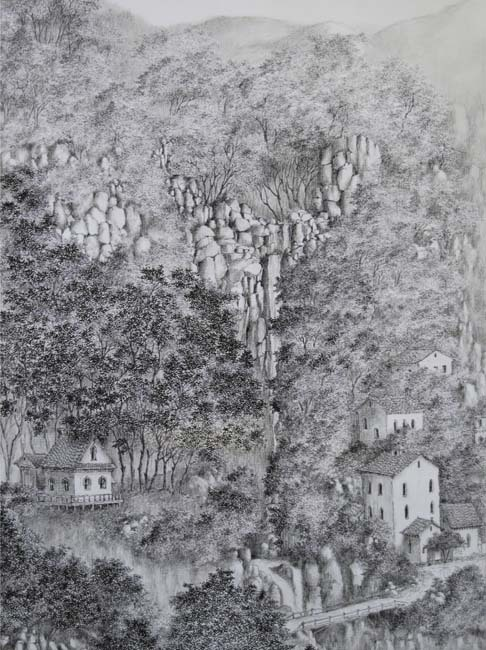
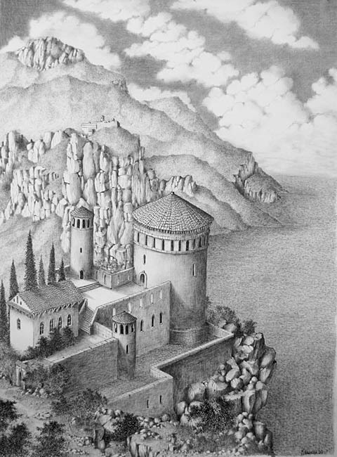
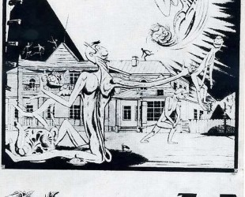
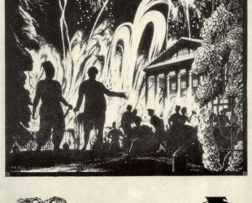
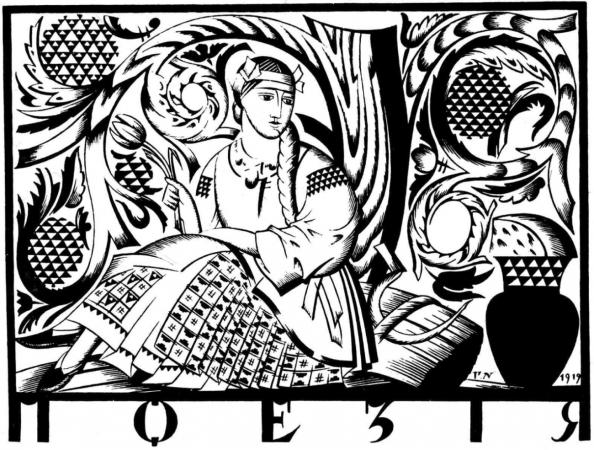

Графіка
Українські графіки
Ігор Калінін
Калінін Ігор Євгенович народився 26 липня 1966 року в Донецьку, Україна. Колишній військовий льотчик.
Після звільнення з армії, закінчив Київський національний технічний університет за спеціальністю «видавнича справа та технологія поліграфічного виробництва». Образотворчим мистецтвом займається з дитинства. Основний напрямок - графіка, а саме: туш, пастель, акварель.
Його знають як людину поетико-романтичного складу характеру, що видно в його графічних роботах і віршах.
Метод автора - своєрідне моделювання як реально існуючих художніх образів, так і вигаданих. Він конструює пам'ятники архітектури, ансамблі, цивілізації, які в його уяві зв'язуються виключно з минулими епохами.
 |
 |  |
Уважний погляд автора ковзає по часу, він трактує пам'ятники архітектури як праці тисяч людей, що жили в різних країнах, як вічне світло життя, i нарешті, як зв'язок різних часів і народів, як розуміння людської дружби і краси.
Іншою особливістю творчої манери автора є те, що дух минулих століть, історичні та художні пам'ятки він ніби подає за допомогою не тільки самих форм, які є плодом його фантазії, але і їх часто детальною розробкою.
Зображення всіх подробиць свідчить не про бажання бути скрупульозним в дрібницях з метою відтворення баченого, а про зорову яскравість образу, про поетичність у декоративному ладі мислення автора.
Відчуття форми у автора проявляється в зображенні архітектурних споруд, в їх пропорціях, в шпилях, що спрямувалися вгору, башточках, а декоративність в тому, як розгортається картина візерунків, що складається з описаних контурів, їх філігранної обробки. В роботах автора виникає первозданний світ давно забутих образів, різноманітних, фантастичних, несе в собі пам'ять про велике минуле Людства.
Григорій Нарбут
Народився 25 лютого 1886 року на хуторі Нарбутівка поблизу Глухова (тепер село Сумської області) в сім’ї дрібного службовця. Змалку вирізував витинанки, любив малювати орнаменти, квіти, змальовувати літери зі старих книжок. З 1896 року навчався в Глухівській гімназії, де зацікавився книжковою ілюстрацією, малюнками І.Білібіна до дитячих книжок, захопився геральдикою. 1904 року Нарбут малює ілюстрації до «Руслана і Людмили» О.Пушкіна. Того самого року малюнки гімназиста експонувалися на сільськогосподарській виставці в Глухові й були відзначені подячною грамотою повітового земства. 1906 року Нарбут бере участь у виставці, влаштованій у Глухові гуртком любителів мистецтва. Один з малюнків з виставки — «Герб міста Москви» — друкується у петербурзькому видавництві. 1906 року Нарбут закінчує гімназію і з братом Володимиром їде в Петербург, показує свої малюнки відомому художникові І.Білібіну, який влаштовує його у себе в домі, сприяє у його подальшій долі художника.
|  |  |  |
Щороку Нарбут приїздить в Україну, працює в архівах, у музеї Тарновського в Чернігові, багато малює з натури. 1913 року створює ілюстрації та оформлення до «Статуту ордена св. Георгія», казок Андерсена. 1914 року в Лейпцігу на всесвітній виставці було представлено каталог та альбом, які оформляв Георгій Нарбут. 1915 року ілюструє книжку Г.Лукомського «Старинные усадьбы Харьковской губернии».
У 1914—1915 роках створює цикл алегоричних композицій на теми другої світової війни, починає працювати над «Українською абеткою». 1916 року Нарбута разом з Є.Лансере, К.Петровим-Водкіним, І.Білібіним обрано до комітету об’єднання «Мир искусства». У грудні 1917 року Нарбут бере участь у заснуванні Української Академії мистецтв, у створенні символіки Української Народної Республіки, виконує ескізи українських грошових знаків — гривень, поштових марок, цінних паперів Української держави, створює ілюстрації до журналів, книжок. 1919 року стає ректором Української Академії мистецтв
Того року створює ілюстрації до «Енеїди» Котляревського, обкладинки до журналів «Мистецтво», «Зоря», екслібриси, які стали класикою української графіки. Працює над комплексним оформленням книги, виховує школу своїх послідовників, які створили самобутній стиль українського книжкового мистецтва. 23 травня 1920 року після несподіваної короткочасної хвороби Нарбут помер. Поховано його на Байковому кладовищі у Києві.
Творчість Георгія Нарбута — яскрава сторінка в українському мистецтві. Його по праву називають одним з найбільших графіків сучасності.
Вперед Назад / Вгору